การต่อวงจรและเขียนโค้ด Arduino เพื่อหาค่าของตัวเหนี่ยวนำ#
บทความนี้นำเสนอวงจรไฟฟ้า-อิเล็กทรอนิกส์ และตัวอย่างการเขียนโค้ด Arduino สำหรับบอร์ด Arduino Uno เพื่อวัดค่าเหนี่ยวนำ (Inductance Measurement)
Keywords: Inductor, Inductance Measurement, Arduino Programming, AUTODESK Tinkercad Circuits
▷ การหาค่าเหนี่ยวนำในเชิงทฤษฎี#
การวัดหรือคำนวณหาค่าความเหนี่ยวนำ (Inductance) ของตัวขดลวดเหนี่ยวนำหรือคอยล์ (Inductive Coil) มีอยู่หลายวิธี ยกตัวอย่างเช่น การใช้เครื่องมือวัด LCR Meter ซึ่งเป็นวิธีที่สะดวก แต่ก็มีวิธีพื้นฐานสำหรับการนำไปทดลองทางไฟฟ้า เช่น การนำตัวต้านทานและตัวเหนี่ยวนำมาต่อกันเป็นวงจรอนุกรม (Series RL Circuit) หรือ วงจรแบ่งแรงดัน (Voltage Divider) แล้วใช้เครื่องสร้างสัญญาณรูปคลื่นไซน์ (Sinusoidal Waveform) เป็นอินพุตให้วงจร และใช้เครื่องออสซิลโลสโคปวัดสัญญาณเอาต์พุตซึ่งเป็นแรงดันตกคร่อมที่ตัวต้านทาน โดยเปรียบเทียบกับสัญญาณอินพุต จากนั้นให้ปรับหาความถี่ที่ทำให้สัญญาณเอาต์พุต มีแอมพลิจูดเป็นครึ่งหนึ่งของสัญญาณอินพุต
รีแอคแตนซ์ (Inductive Reactance: ) ของตัวเหนี่ยวนำขึ้นอยู่กับค่าความเหนี่ยวนำและความถี่ ดังนั้นเมื่อพิจารณาแอมพลิจูดของแรงดันตกคร่อมที่ตัวต้านทานในวงจร RL เปรียบเทียบกับแอมพลิจูดของสัญญาณอินพุตที่เป็นรูปคลื่นไซน์ ก็สามารถเขียนความสัมพันธ์ได้ดังนี้ ถ้ากำหนดให้ คือ ความถี่เชิงมุมที่ทำให้อัตราส่วนดังกล่าวมีค่าเท่ากับ ดังนั้นความสัมพันธ์ระหว่าง , และ เป็นดังนี้
หากคำนวณค่าให้เป็นหน่วยเดซิเบล เมื่อใช้ความถี่ จะได้ค่าดังนี้
มาลองดูตัวอย่างผลการจำลองและวิเคราะห์การทำงานของวงจร RL ด้วยซอฟต์แวร์ EasyEDA
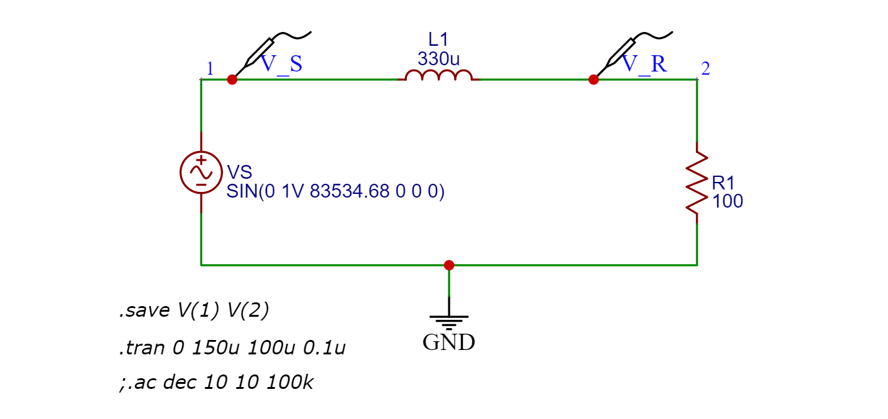
รูป: วงจร RL แบบอนุกรม (เลือกใช้ค่าเป็นตัวอย่าง: R=100 Ω และ L=330uH) และสัญญาณอินพุตเป็นรูปคลื่นไซน์ที่มีแอมพลิจูดเท่ากับ 1.0V หรือ Vpp = 2.0V
เนื่องจากในวงจรมี R=100 Ω และ L=330uH ดังนั้นความถี่ ที่ทำให้แอมพลิจูดของ เท่ากับครึ่งหนึ่งของแอมพลิจูดของสัญญาณอินพุต สามารถคำนวณได้ดังนี้
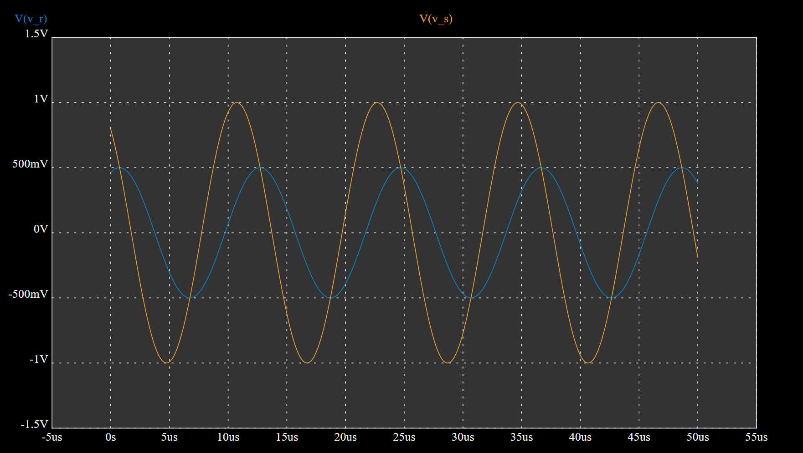
รูป: ผลการจำลองการทำงานด้วยซอฟต์แวร์ EasyEDA ในโหมด Transient เมื่อกำหนดให้สัญญาณอินพุตมีความถี่เท่ากับ 83,534.68 Hz ซึ่งจะได้แอมพลิจูดของสัญญาณเอาต์พุตเท่ากับ 0.5V (500mV)
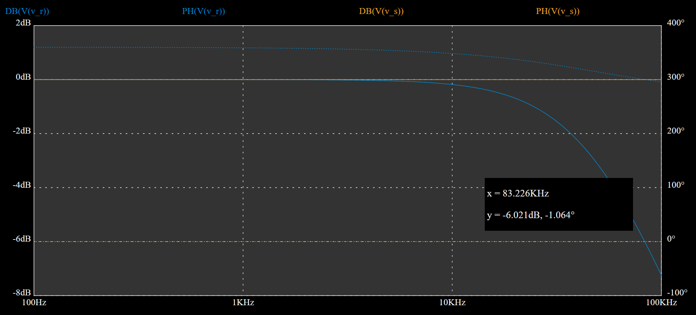
รูป: ผลการจำลองการทำงานในโหมด AC Sweep และแสดงค่าแอมพลิจูดที่มีหน่วยเป็นเดซิเบล จะเห็นได้ว่าเมื่อเพิ่มความถี่ให้กับสัญญาณอินพุต แอมพลิจูดของสัญญาณเอาต์พุตจะมีแนวโน้มลดลง
อย่างไรก็ตามวิธีนี้ต้องอาศัยการสร้างสัญญาณแอนะล็อกที่เป็นรูปคลื่นไซน์ปรับความถี่ได้ และการวัดค่าแอมพลิจูดของสัญญาณเอาต์พุต ซึ่งโดยทั่วไปก็จะใช้อุปกรณ์เครื่องมือวัดในห้องปฏิบัติการ ได้แก่ เครื่องกำเนิดสัญญาณและออสซิลโลสโคป ดังนั้นวิธีนี้อาจไม่เหมาะสำหรับการนำไปใช้กับไมโครคอนโทรลเลอร์
▷ วงจรสำหรับการหาค่าเหนี่ยวนำ#
บทความ "วงจรสำหรับการทดลองเพื่อหาค่าของตัวเหนี่ยวนำ" ได้นำเสนอตัวอย่างของวงจรอิเล็กทรอนิกส์ที่สร้างสัญญาณเอาต์พุต-ดิจิทัล และเป็นสัญญาณแบบพัลส์ที่มีความถี่ขึ้นอยู่ค่าของตัวเก็บประจุและตัวเหนี่ยวนำ ดังนั้นถ้าสามารถวัดคาบหรือความถี่ของสัญญาณพัลส์ที่เกิดขึ้นได้ (เช่น ใช้เครื่องออสซิลโลสโคป) และทราบค่าของตัวเก็บประจุ ก็สามารถคำนวณค่าของตัวเหนี่ยวนำได้จากความถี่ที่วัดได้
ในบทความนี้ เราจะนำวงจรดังกล่าวมาทดลองเพิ่มเติม และจำลองการทำงานโดยใช้ซอฟต์แวร์ AUTODESK Tinkercad - Circuits ทดลองใช้งานร่วมกับบอร์ดไมโครคอนโทรลเลอร์ เช่น Arduino Uno และเขียนโค้ดเพื่อวัดคาบหรือความถี่ของสัญญาณ แล้วแสดงค่าของตัวเหนี่ยวนำในวงจรที่ได้จากสูตรการคำนวณ
การใช้ซอฟต์แวร์เพื่อวางแผนการต่อวงจรบนเบรดบอร์ดและจำลองการทำงาน จะทำให้ผู้ใช้สามารถตรวจสอบความถูกต้องของวงจร และทำความเข้าใจพฤติกรรมการทำงานของวงจรได้ในเบื้องต้น โดยดูจากสัญญาณในวงจรและแสดงผลด้วยออสซิลโลสโคปเสมือนจริง
รูปผังวงจรต่อไปนี้ แสดงให้เห็นว่า ด้านซ้ายของวงจรมีช่องรับสัญญาณอินพุต-ดิจิทัล (PULSE_IN) ซึ่งเป็นสัญญาณดิจิทัลแบบพัลส์ แล้วต่อกับตัวต้านทานอนุกรมและไดโอด ตามลำดับ แรงดันตกคร่อมที่ตัวเก็บประจุ (CH1) จะถูกนำไปใช้กับไอซีเปรียบเทียบระดับแรงดัน LM393 และได้เอาต์พุต (CH2) เป็นสัญญาณดิจิทัล (PULSE_OUT)
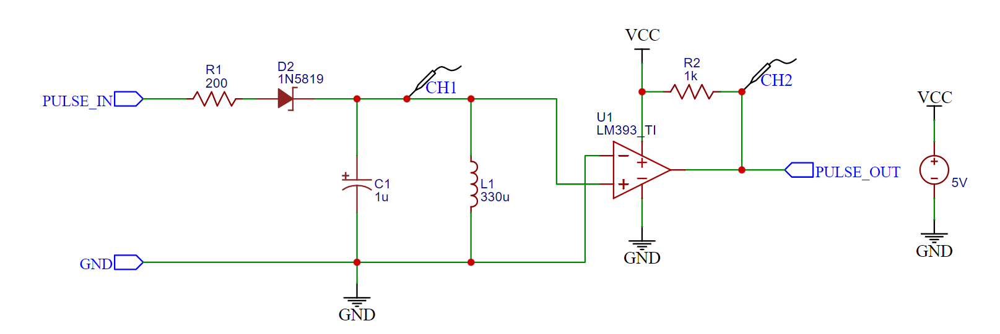
รูป: ผังวงจรสำหรับการต่อวงจรบนเบรดบอร์ด
ในช่วงแรกของหนึ่งคาบสัญญาณอินพุต เมื่อแรงดันไฟฟ้าที่ขาอินพุต PULSE_IN เปลี่ยนจาก 0V ไปเป็น 5V จะเกิดการชาร์จประจุที่ตัวเก็บประจุ C1 และในขณะเดียวกันก็มีกระแสไฟฟ้าไหลผ่านตัวเหนี่ยวนำ L1
เมื่อ PULSE_IN เปลี่ยนจาก 5V ไปเป็น 0V
จะไม่มีกระแสไฟฟ้าไหลย้อนกลับผ่านตัวไดโอด ในกรณีนี้ ตัวเก็บประจุกับตัวเหนี่ยวนำซึ่งมีพลังงานไฟฟ้าในขณะนั้น
จะกลายเป็นวงจร L กับ C ที่ต่อขนานกัน
และจะทำให้เกิดสัญญาณรูปคลื่นไซน์ที่มีความถี่เรโซแนนซ์ (Resonant Frequency) ของวงจร
แต่เนื่องจากตัวเหนี่ยวนำมีค่าความต้านทานแฝงอยู่ แต่มีค่าไม่มากนัก (เช่น ไม่เกิน 1Ω) เมื่อวัดแรงดันตกคร่อมที่ตัวเก็บประจุหรือตัวเหนี่ยวนำ (สัญญาณที่ CH1) แอมพลิจูดของสัญญาณรูปคลื่นไซน์จะลดลงไปเรื่อย ๆ เมื่อเวลาผ่านไป จนเข้าสู่สภาวะคงตัว และมีแรงดันไฟฟ้าเป็น 0V
หากนำสัญญาณ CH1 ไปใช้เป็นอินพุตป้อนให้ไอซี LM393 แล้วเปรียบเทียบกับแรงดันอ้างอิง 0V ก็จะได้สัญญาณเอาต์พุตเป็นสัญญาณดิจิทัล (สัญญาณที่ CH2) ที่มีลักษณะเป็นสัญญาณพัลส์ ในช่วงที่เกิดการแกว่งของสัญญาณ CH1
▷ การต่อวงจรเสมือนจริงและจำลองการทำงาน#
ถัดไปเป็นตัวอย่างผลการจำลองการทำงานโดยใช้ซอฟต์แวร์ Tinkercad Circuits มีการใช้เครื่องกำเนิดสัญญาณ (Function Generator) เพื่อสร้างสัญญาณแบบมีคาบและเป็นรูปสัญญาณทรงสี่เหลี่ยม (Rectangular Waveform)
เริ่มต้นด้วยการต่อวงจรเสมือนจริงบนเบรดบอร์ด แต่ยังไม่ต่อวงจรสำหรับไอซี LM393 และการวัดสัญญาณ CH1 (แรงดันตกคร่อมที่ตัวเก็บประจุ)
การแกว่งของสัญญาณ CH1 ในวงจร (Ringing Signal) เกิดขึ้นและเป็นผลตอบสนองของวงจร เมื่อสัญญาณอินพุตเปลี่ยนจาก 0V เป็น 5V ช่วงที่เปลี่ยนเป็นลอจิก HIGH หรือเรียกว่า ขอบขาขึ้น (Rising-Edge)
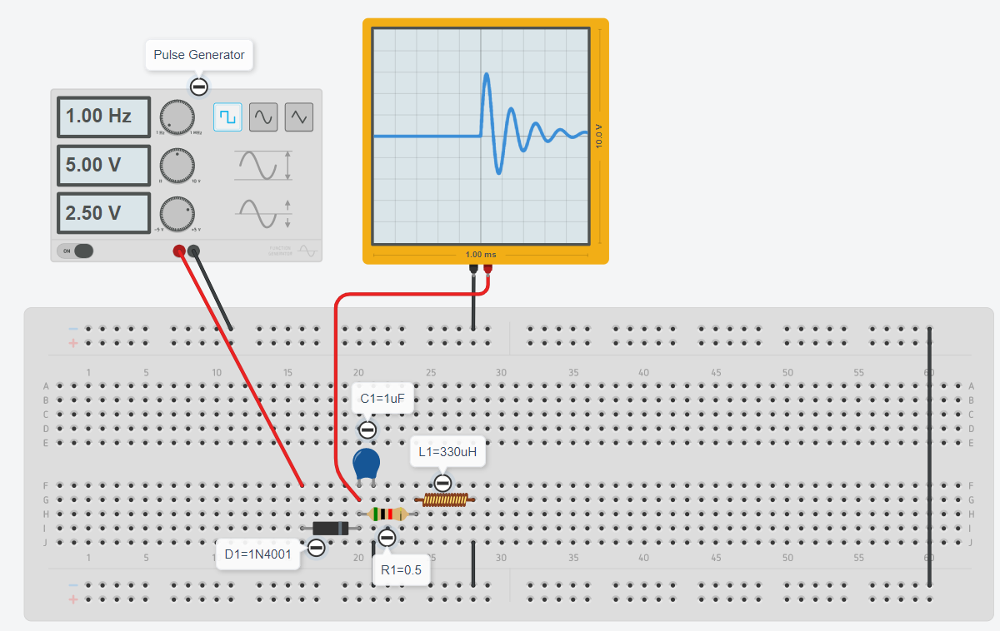
รูป: แสดงรูปคลื่นสัญญาณ CH1 (แรงดันตกคร่อมที่ตัวเก็บประจุ) เมื่อสัญญาณอินพุตเป็นขอบขาขึ้น
การแกว่งของสัญญาณ CH1 ในวงจร เกิดขึ้นอีกครั้งเมื่อสัญญาณอินพุตเปลี่ยนจาก 5V เป็น 0V ช่วงที่เปลี่ยนเป็นลอจิก LOW หรือเรียกว่า ขอบขาลง (Falling-Edge)
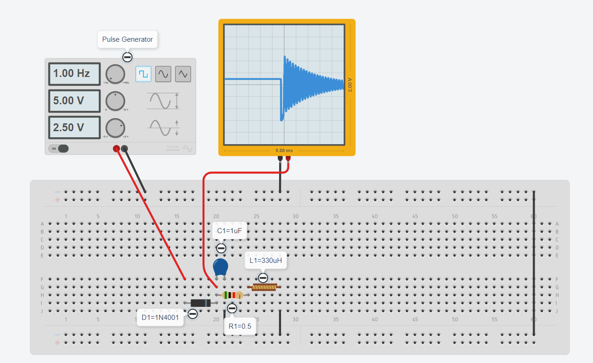
รูป: แสดงรูปคลื่นสัญญาณ CH1 (แรงดันตกคร่อมที่ตัวเก็บประจุ) เมื่อสัญญาณอินพุตเป็นขอบขาลง
ถัดไปเป็นตัวอย่างการต่อวงจรเสมือนจริงบนเบรดบอร์ด และมีการต่อวงจรสำหรับไอซี LM393 และวัดสัญญาณ CH1 (สัญญาณแอนะล็อก) และ CH2 (สัญญาณดิจิทัล) พร้อมกัน
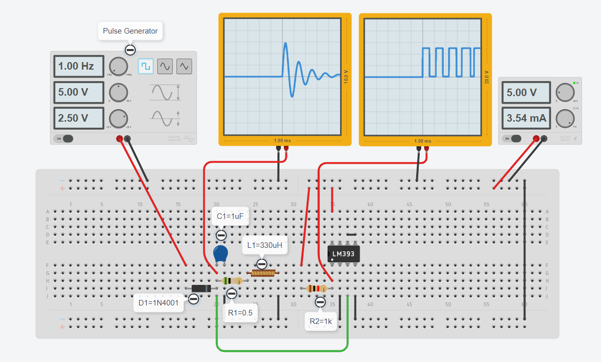
รูป: สัญญาณ CH1 และ CH2 เมื่อเกิดขอบขาขึ้นที่สัญญาณอินพุต
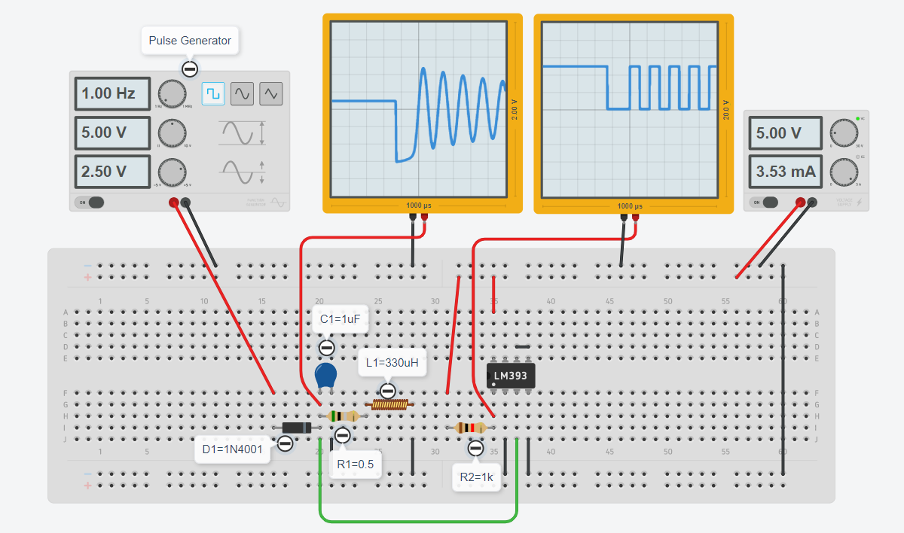
รูป: สัญญาณ CH1 และ CH2 เมื่อเกิดขอบขาลงที่สัญญาณอินพุต
▷ การใช้งานร่วมกับบอร์ด Arduino#
ถัดไปเป็นการเขียนโค้ดเพื่อให้บอร์ด Arduino สร้างสัญญาณพัลส์ (PULSE_OUT)
ให้กับวงจรบนเบรดบอร์ด และรับสัญญาณเอาต์พุต (PULSE_IN) ที่เป็นสัญญาณแบบดิจิทัล
เพื่อนำมาวัดคาบของสัญญาณพัลส์ คำนวณค่าความถี่ และค่าของตัวเหนี่ยวนำ ตามลำดับ
คำสั่งพื้นฐานของ Arduino ที่ใช้สำหรับวัดความกว้างของพัลส์ (Pulse Width)
ในช่วงที่เป็น High หรือ Low ก็ได้ คือ คำสั่ง pulseIn() และได้ค่าตัวเลขที่มีหน่วยเป็น
ไมโครวินาที
แต่โค้ดตัวอย่างต่อไปนี้ จะใช้วิธีการเปิดใช้งานอินเทอร์รัพท์ภายนอก (External Interrupt) สำหรับขาอินพุต-ดิจิทัล (เช่น ขา D2 หรือ D3 ของบอร์ด Arduino Uno)
เมื่อเกิดเหตุการณ์ขอบขาขึ้นที่สัญญาณอินพุต
ฟังก์ชันที่ถูกกำหนดให้ทำหน้าที่เป็น ISR (Interrupt Service Routine)
จะทำการอ่านและบันทึกเวลาของระบบในหน่วยเป็นไมโครวินาที (usec)
ผลต่างของเวลาเมื่อเกิดเหตุการณ์อย่างน้อยสองครั้งตามลำดับก็คือ คาบของสัญญาณพัลส์ (period)
ข้อสังเกต: ความละเอียดในการอ่านเวลา (Time Resolution)
เป็นค่าตัวเลขจำนวนเต็ม เช่น ค่าที่ได้จากการทำคำสั่ง micros()
สำหรับการจับเวลาของ Arduino Uno จะเท่ากับ 4usec
โค้ดตัวอย่างสำหรับ Arduino Sketch มีดังนี้
#define C_uF (1)
#define PULSE_OUT (5)
#define PULSE_IN (2) // use either D2 or D3 pin
#define INTERRUPT_PIN digitalPinToInterrupt(PULSE_IN)
void setup() {
Serial.begin(9600);
Serial.println( "Arduino - Inductance Measurement..." );
delay( 1000 );
pinMode( PULSE_OUT, OUTPUT );
pinMode( PULSE_IN, INPUT );
}
char sbuf[64]; // used for sprintf()
volatile uint8_t pulse_cnt = 0;
volatile uint32_t saved_ts;
volatile uint32_t saved_period = 0;
uint32_t period;
void pulse_isr() { // ISR function for external interrupt
uint32_t ts = micros();
if ( pulse_cnt == 0 ) {
saved_period = -1;
} else if ( pulse_cnt < 4 ) {
saved_period = ts - saved_ts;
}
pulse_cnt++;
saved_ts = ts;
}
void loop() {
// create a short pulse
digitalWrite( PULSE_OUT, HIGH );
delay(20);
digitalWrite( PULSE_OUT, LOW );
// enable the external interrupt on PULSE_PIN pin
pulse_cnt = 0;
attachInterrupt( INTERRUPT_PIN, pulse_isr, RISING );
delay(1);
cli();
period = saved_period;
// disable the external interrupt on PULSE_PIN pin
detachInterrupt( INTERRUPT_PIN );
sei();
// compute the frequency from the measured period value
double f = 1.0e6/period;
// determine the inductance from the calculated frequency
uint32_t inductance = 1e12/(pow(2*PI*f,2)*C_uF);
// show the results
sprintf( sbuf,"period: %lu usec, %lu Hz, %lu uH",
period, (uint32_t)f, inductance );
Serial.println( sbuf );
Serial.flush();
delay(1000);
}
▷ การวัดความถี่ด้วย Arduino: จำลองการทำงานเสมือนจริง#
ก่อนที่จะทดลองกับอุปกรณ์จริง เราสามารถใช้ Tinkercad Circuits จำลองการทำงานของวงจรร่วมกับการทำงานของโค้ด Arduino Uno ได้ ตามตัวอย่างต่อไปนี้
การทดลองใช้ใช้ค่า L=330uH, C=1uF เมื่อจำลองการทำงานแล้ววัดค่าด้วย Arduino ได้เท่ากับ 340uH
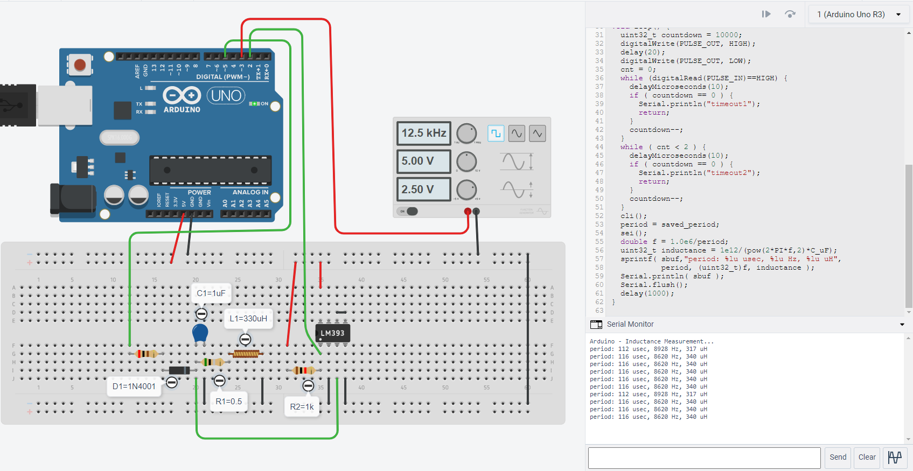
รูป: การจำลองการทำงาน โดยใช้ขา D2 รับสัญญาณพัลส์มาจากวงจรบนเบรดบอร์ด
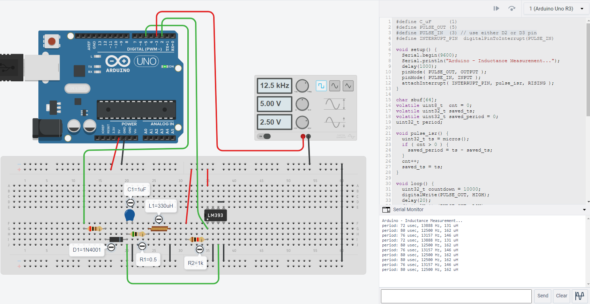
รูป: การจำลองการทำงาน โดยใช้ขา D3 รับสัญญาณพัลส์ มาจากเครื่องกำเนิดสัญญาณ (เช่น ตั้งค่าความถี่เท่ากับ 12.5kHz) และใช้เป็นสัญญาณทดสอบการทำงานของ Arduino
▷ การวัดความถี่ด้วย Arduino: การต่อวงจรทดลองด้วยอุปกรณ์จริง#
เมื่อได้ต่อวงจรโดยใช้อุปกรณ์จริงตามที่ได้ออกแบบไว้ถูกต้องและครบถ้วนแล้ว และอัปโหลด Arduino Sketch ลงในบอร์ด Arduino Uno ก็สามารถวัดความถี่หรือคาบของสัญญาณ โดยใช้เครื่องออสซิลโลสโคป เปรียบเทียบกับผลการทำงานด้วย Arduino
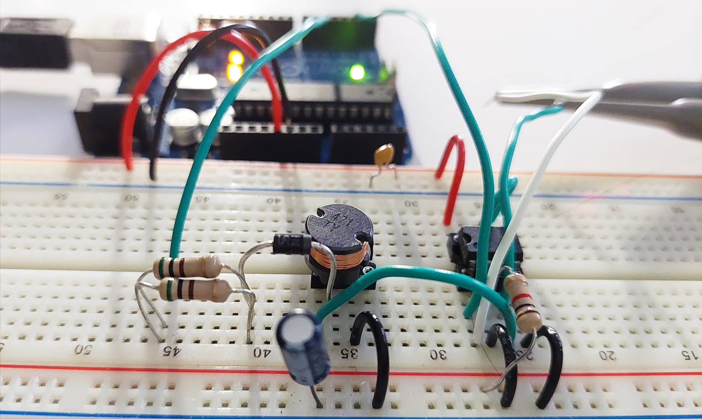
รูป: การต่อวงจรบนเบรดบอร์ดเพื่อทำการทดลอง
ผลการทดลอง: เมื่อใช้ขดลวดเหนี่ยวนำ L=330uH (Tolerance: ± 10%)
จากการทดลองโดยใช้ L=330uH จะเห็นได้ว่า คาบที่วัดได้จากสองวิธี มีความแตกต่างกันเล็กน้อย (ไม่เกิน ±4usec) และมีความคลาดเคลื่อนสัมพัทธ์ในการวัด (Relative Error) เมื่อใช้ Arduino เมื่อเปรียบเทียบกับค่าอ้างอิง คิดเป็นเปอร์เซ็นต์ได้ดังนี้
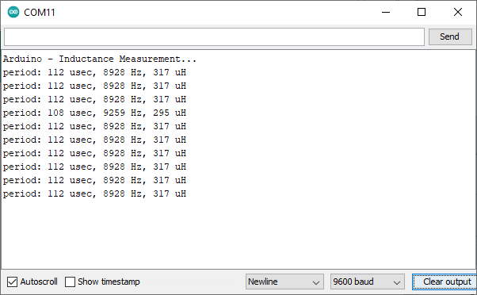
รูป: ข้อความที่ได้จากการทำงานของบอร์ด Arduino (วัดความถี่ได้ 8.928 kHz และคาบ 112 usec)
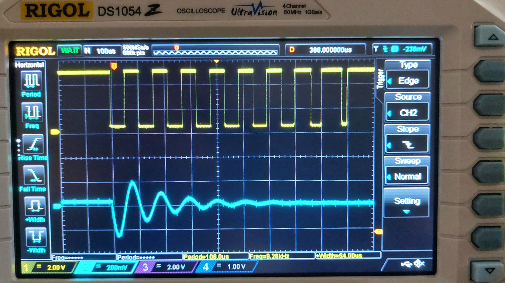
รูป: การวัดสัญญาณด้วยเครื่องออสซิลโลสโคป (วัดความถี่ได้ 9.28 kHz และคาบ 109 usec)
ผลการทดลอง: เมื่อใช้ขดลวดเหนี่ยวนำ L=470uH (Tolerance: ± 10%)
จากการทดลองโดยใช้ L=470uH จะเห็นได้ว่า มีความคลาดเคลื่อนสัมพัทธ์ในการวัดด้วย Arduino เมื่อเปรียบเทียบกับค่าอ้างอิงดังนี้
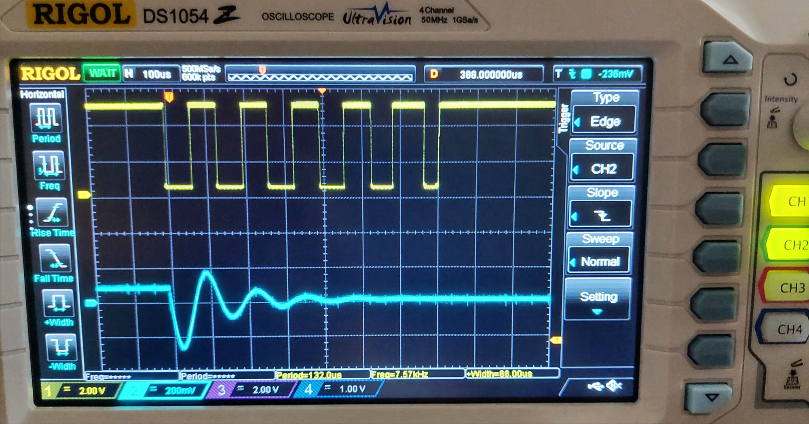
รูป: การวัดสัญญาณด้วยเครื่องออสซิลโลสโคป (ได้ความถี่ 7.57 kHz และคาบ 132 usec)
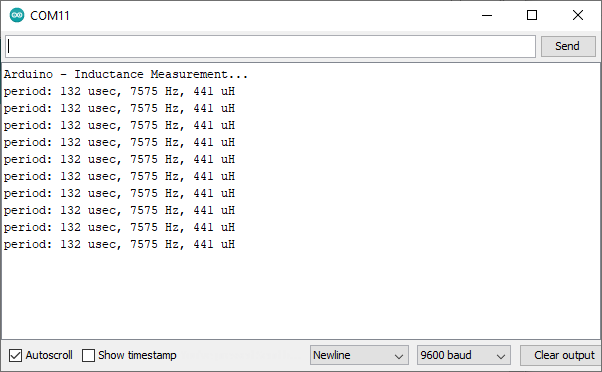
รูป: ข้อความที่ได้จากการทำงานของบอร์ด Arduino (ได้ความถี่ 7.575 kHz และคาบ 132 usec)
▷ คำถามท้ายการทดลอง#
เมื่อได้ทำความเข้าใจหลักการทำงานของวงจรและโค้ดตัวอย่าง รวมถึงการลงมือปฏิบัติทดลองจริงแล้ว ให้ลองตอบคำถามต่อไปนี้
- ในกรณีที่ใช้วงจร RL มาต่อแบบอนุกรมกัน แล้วใช้เครื่องออสซิลโลสโคปวัดสัญญาณเอาต์พุตซึ่งเป็นแรงดันตกคร่อมที่ตัวเหนี่ยวนำ (แทนที่การวัดแรงดันตกคร่อมของตัวต้านทาน) และป้อนสัญญาณอินพุตเป็นรูปไซน์ จะมีสูตรคำนวณอย่างไร เพื่อหาความถี่ที่ทำให้แอมพลิจูดของสัญญาณเอาต์พุต เป็นครึ่งหนึ่งของแอมพลิจูดของสัญญาณอินพุต ? และเมื่อใช้ความถี่ดังกล่าว จะคำนวณความต่างเฟสระหว่างสัญญาณเอาต์พุตและอินพุตได้ค่าเท่าไหร่ ?
- ในการเลือกค่าสำหรับตัวต้านทานที่ต่ออนุกรมกับไดโอดในวงจร มีประเด็นใดบ้างที่จะต้องพิจารณา หรือ มีข้อควรระวังอย่างไรบ้าง ? และจะส่งผลอย่างไรต่อกระแสที่ไหลผ่านตัวเหนี่ยวนำในปริมาณสูงสุด ?
- แรงดันตกคร่อมที่ตัวเก็บประจุในช่วงที่มีการแกว่ง จะมีระดับแรงดันไฟฟ้าทั้งเป็นบวกและลบ ค่า peak-to-peak voltage ของสัญญาณนี้ขึ้นอยู่กับพารามิเตอร์ใดบ้างของวงจร ? และเมื่อนำไปใช้เป็นอินพุตให้กับไอซี LM393 มีข้อควรระวังอย่างไรบ้าง ?
- การเพิ่มหรือลดค่าความเหนี่ยวนำของขดลวดเหนี่ยวนำ (เปรียบเทียบค่าตัวอย่างเช่น 220uH, 330uH, 470uH เป็นต้น) จะส่งผลต่อจำนวนพัลส์ของสัญญาณเอาต์พุตที่เกิดขึ้นหรือไม่ จงอธิบาย ?
- ถ้าต้องการใช้คำสั่ง
pulseIn()เพื่อวัดความกว้างของคาบสัญญาณ จะต้องแก้ไขโค้ดอย่างไร ? และหากนำไปทดลองจริง จะให้ผลแตกต่างจากโค้ดตัวอย่างหรือไม่ ? - ถ้าต้องการเขียนโค้ด Arduino ให้นับจำนวนพัลส์ที่เกิดขึ้นกับสัญญาณเอาต์พุตในช่วงที่มีการแกว่งของสัญญาณ จะมีแนวทางอย่างไร ?
- ถ้าจะเปลี่ยนไปใช้บอร์ดไมโครคอนโทรลเลอร์ เช่น Espressif ESP32 หรือ Raspberry Pi Pico (RP2040) ซึ่งสามารถเขียนโค้ดได้ โดยใช้ Arduino API แต่ทำงานโดยใช้แรงดันไฟเลี้ยงสำหรับลอจิก (Logic Voltage Level) ที่ระดับ +3.3V (ไม่สามารถใช้กับ +5V ได้) ในกรณีจะต้องแก้ไขวงจรอย่างไร ?
- มีวิธีการอื่นอีกหรือไม่ ที่เราสามารถนำมาใช้ในการวัดค่าของขดลวดเหนี่ยวนำ ? อาจลองสืบค้นดูในอินเทอร์เน็ต
▷ กล่าวสรุป#
บทความนี้นำเสนอวิธีการพื้นฐานสำหรับการหาค่าเหนี่ยวนำของขดลวดเหนี่ยวนำโดยใช้วงจรอิเล็กทรอนิกส์พื้นฐาน ร่วมกับการทำงานของบอร์ด Arduino และเปรียบเทียบผลการจำลองการทำงานกับการต่ออุปกรณ์และทดลองจริง
This work is licensed under a Creative Commons Attribution-ShareAlike 4.0 International License.
Created: 2022-05-31 | Last Updated: 2022-06-04